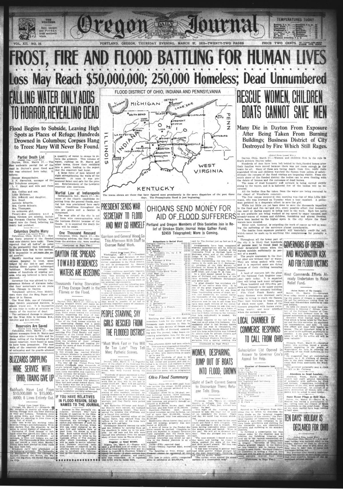

HN-385: Local rescuers bring a more grounded picture of Dayton's devastation
HN-385 · March 28, 1913 · Disasters, Accidents & Emergencies > Rescues, Evacuations & Emergency Response > Search and rescue

page scanRecorded finding
Discovery narrative
Source: Richmond Palladium (Daily), p. 1 — original page; Ohio History's Dayton assessment.
Report: Richmond residents and reporters traveled toward Dayton with automobile loads of food and reported firsthand on broken transport routes, people sheltering in buildings, water shortages, damaged electrical and gas services, and improvised boat rescues. The paper admitted casualty estimates still ranged from 1,000 to 5,000, even while giving specific descriptions of relief work.
Assessment: This is a follow-up to HN-384, not another flood. The firsthand relief details are more grounded than the hearsay death figures; the latter remained guesses. The eventual 361 recorded deaths should replace the inflated numbers when summarizing the disaster.
Original archive images (5)
Authentic images retrieved from Historic Oregon Newspapers (University of Oregon), Hoosier State Chronicles (Indiana State Library), Papers Past (National Library of New Zealand) and South Carolina Historic Newspapers (University of South Carolina). Article crops are located using the archive's own OCR word coordinates and rendered at native crop resolution; article clips are assembled from the archive's own article-block images; page images marked "archive tiles" are stitched from the archive's own tiled page service at its 256-px tile cap; page images marked "issue PDF" are single pages rasterised from the archive's own issue PDF, with the page chosen by matching the headline against the PDF's text layer; page scans are reduced-size access renditions. No images were generated, mocked, or retouched.

Historic Oregon Newspapers (University of Oregon)
Open larger view · Archive viewer (full resolution)

Historic Oregon Newspapers (University of Oregon)
Open larger view · Archive viewer (full resolution)

Hoosier State Chronicles (Indiana State Library)
Open larger view · Archive viewer (full resolution)

Papers Past (National Library of New Zealand)
Open full-resolution clip · Archive viewer (full resolution)

South Carolina Historic Newspapers (University of South Carolina)
Open full-resolution crop · Page scan · Archive viewer (full resolution)
Source acquisition
Status: Archive images acquired
Authentic archive-owned image renditions were retrieved for this record and are displayed above. The source-acquisition manifest preserves the original pre-acquisition feasibility assessment.
Original seed
URL (preserved verbatim): https://newspapers.library.in.gov/?a=d&d=RPD19130328.1.1
Saved research report: Historical_Newspaper_Event_Research_378-402_2026-10-23.md
Evidence note: A newspaper report means a historical publication made a claim; it does not establish that claim as fact. Contemporary reporting is separated from later scholarly context and our own assessment.